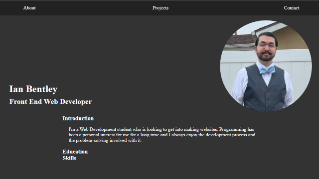

Back to Home
My Portfolio Website
Project Summary
This website that holds my portfolio was programmed by me from its HTML to its CSS to its JavaScript.
Development
Details
The website was developed using a mobile-first responsive design approach. In the About section, the different topics are condensed for space and focus. When one section is selected, the previous is collapsed. The navigation to each section works in a similar way replacing what is displayed with whichever tab is chosen. The projects page displays all of them in a grid and has links to the details of each one. Each item links to the live project so it can be viewed.
Challenges
A considerable challenge in designing this website was controlling which section is viewed using JavaScript. The selected section is revealed while the currently active one is hidden by toggling a class that hides the entire section. Each button in the navigation had to be linked to a particular section. A switch was used based on the id of the button selected and the corresponding section was revealed.